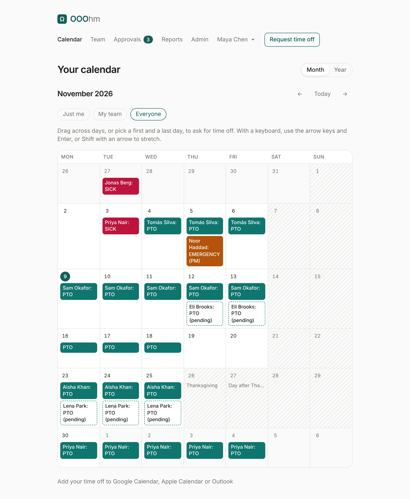
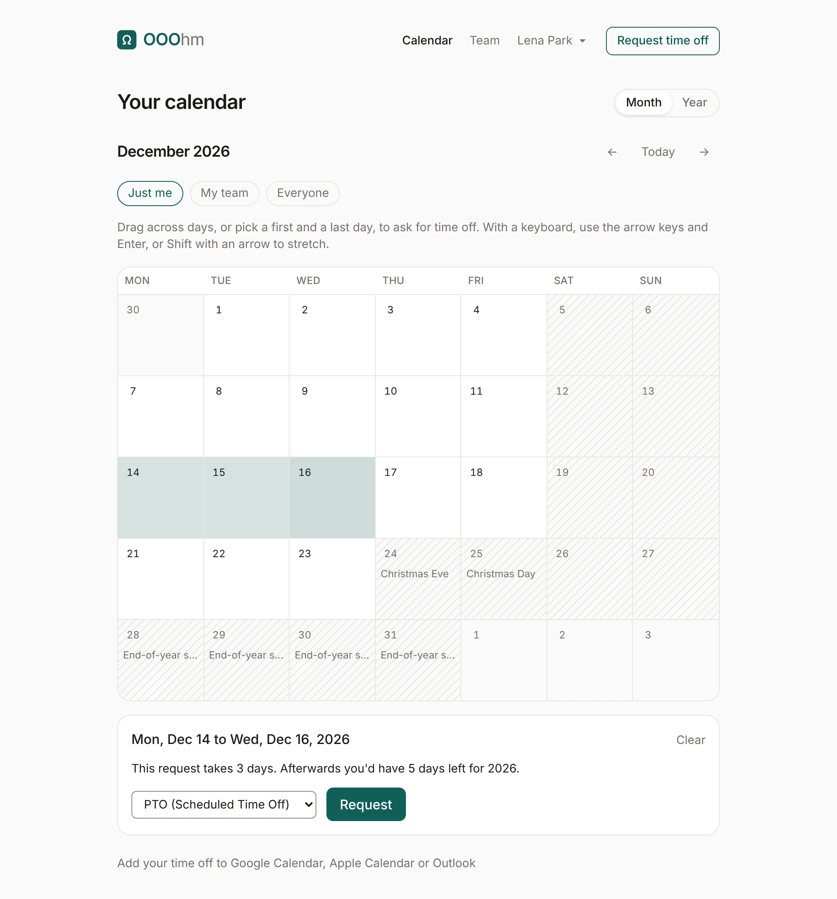
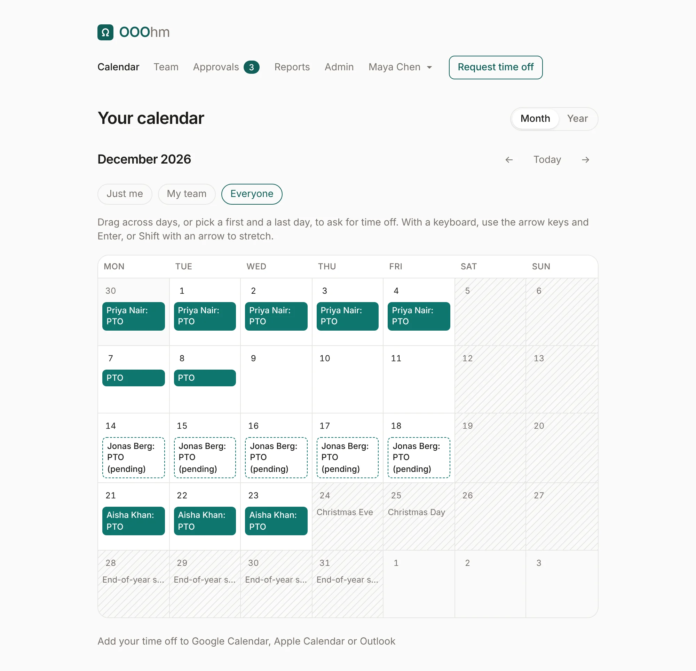
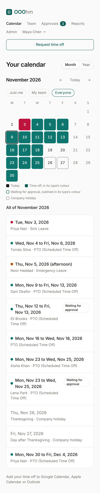
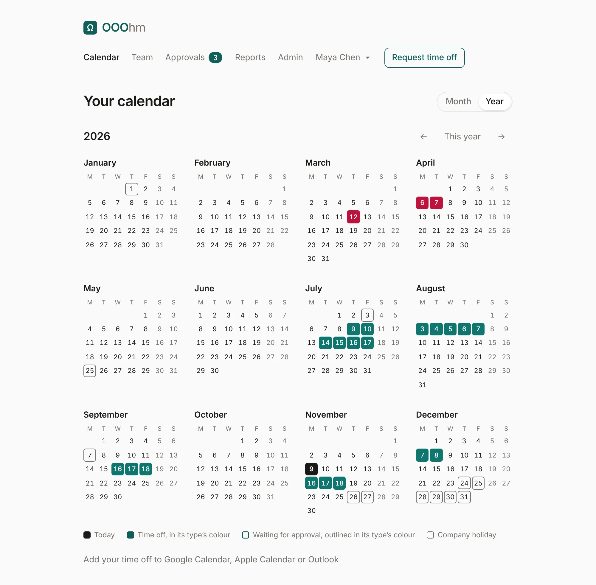
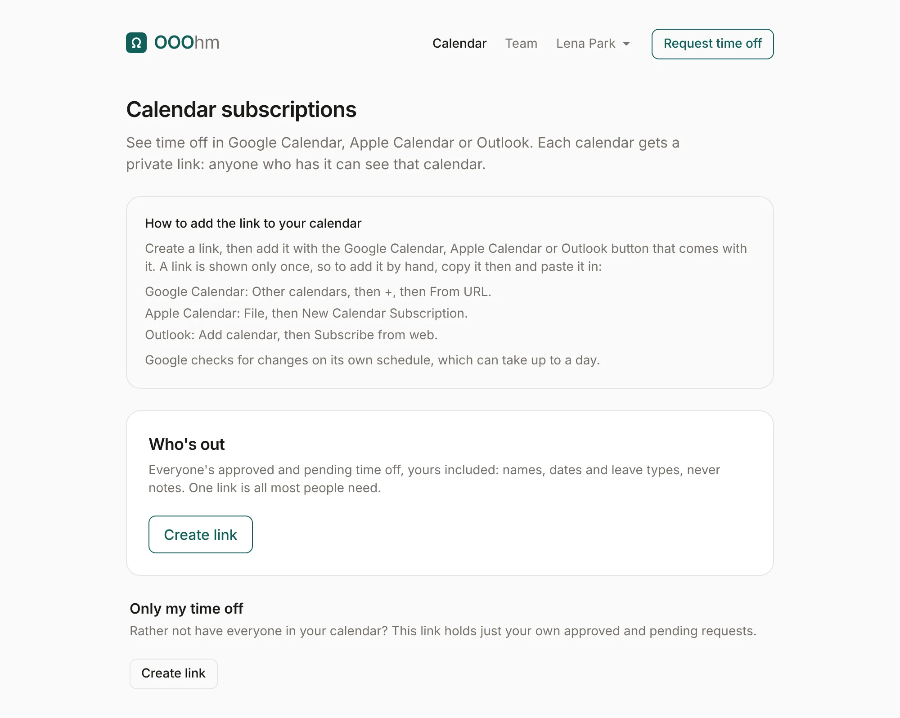

Calendar
Calendar in the top bar shows time off on a calendar. Month and Year switch the view; the arrows move a month or a year, and Today (or This year) comes back.
Month

Each day shows the time off on it as a chip in its leave type's colour, with the person's name and the type's short code (your own show the code alone). Time off waiting for approval has a dashed outline and says pending; a half day says AM or PM. Weekends and other non-working days are shaded, and company holidays are shaded with their name.
Whose time off
The pills above the month choose whose time off it shows:
- Just me: only yours.
- My team: you, your manager, the others who report to your manager, and anyone who reports to you.
- Everyone: everyone you're allowed to see.
What "everyone" means is set by an admin under Company: everyone in the company, only your team, or only your own. When it's only your own, the pills don't show. Admins always see everyone.
Asking for days on the calendar
Drag across days, or click a first and a last day, to ask for that time off. A panel under the month shows the dates, what the request would take and leave, a leave type, and Request. Clear starts over. With a keyboard, use the arrow keys and Enter, or Shift with an arrow to stretch.

Holidays show on the month too. Here an end-of-year shutdown (see Holidays) covers December 28 to 31:

On a phone, the month becomes a compact grid: days with time off are filled in their type's colour, and everything in the month is listed under it.

Year
The year view shows your own time off across twelve months: filled in its type's colour when approved, outlined while waiting, with today and company holidays marked.

Calendar subscriptions
Add your time off to Google Calendar, Apple Calendar or Outlook, under the calendar (or on your account page), opens Calendar subscriptions. Each calendar gets a private link: anyone who has the link can see that calendar, so treat it like a password.

| Calendar | What it holds |
|---|---|
| Who's out | The approved and pending time off of everyone you can see, yours included: names, dates and leave types, never notes. |
| Only my time off | Just your own approved and pending requests. |
Create link makes the link and shows it once, with buttons for Google Calendar, Apple Calendar and Outlook. To add it by hand, copy it then:
- Google Calendar: Other calendars, then +, then From URL.
- Apple Calendar: File, then New Calendar Subscription.
- Outlook: Add calendar, then Subscribe from web.
Once a link exists, Lost it? Replace the link makes a new one (the old one stops working, and calendars using it stop updating), and Turn off switches it off. Google Calendar adds a subscription on a computer only, not in its phone app, and checks for changes on its own schedule, which can take up to a day. When someone is deactivated, their links stop working.